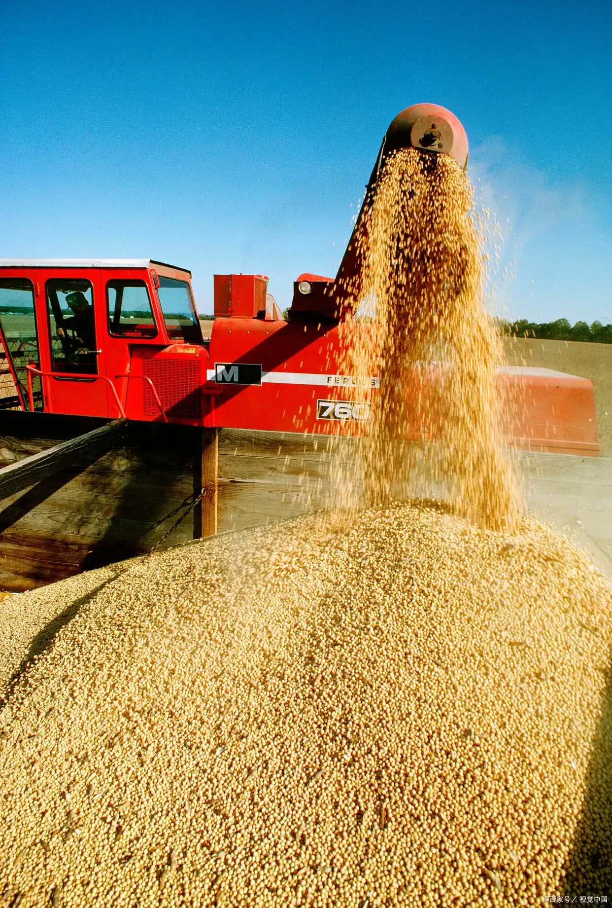
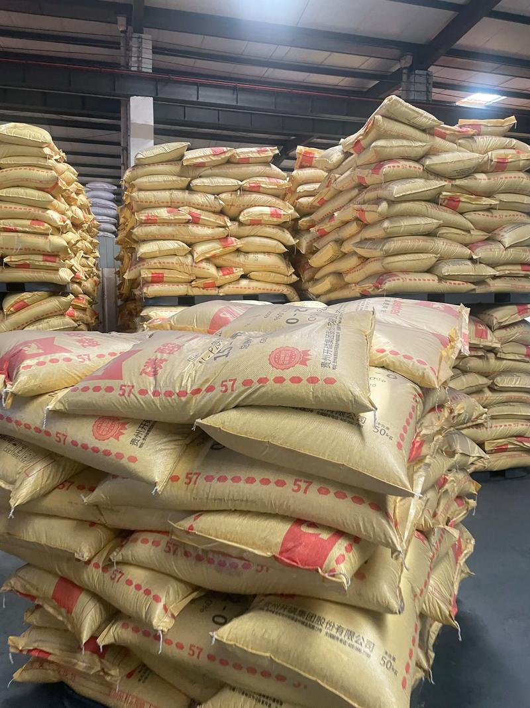

热门农业资讯
查看更多
我国自主研发的大型智能联合收割机投入量产，开启无人化作业
该系列收割机搭载了最新的北斗高精度导航系统，能够实现全自动路径规划、自动收割、甚至智能避障，极大地缓解了秋收期间的人力短缺问题...

农业农村部：确保全年粮食产量保持在1.3万亿斤以上
会议强调，要把抓好春耕备耕作为当前农业农村工作的重中之重，全面落实粮食安全党政同责，强化政策扶持，调动农民种粮积极性...

化肥价格近期走势分析与春耕备肥建议
随着春耕临近，国内化肥市场迎来需求旺季。本文将从尿素、磷肥、钾肥等主要品种入手，深度分析近期价格波动原因并提供备肥指南。